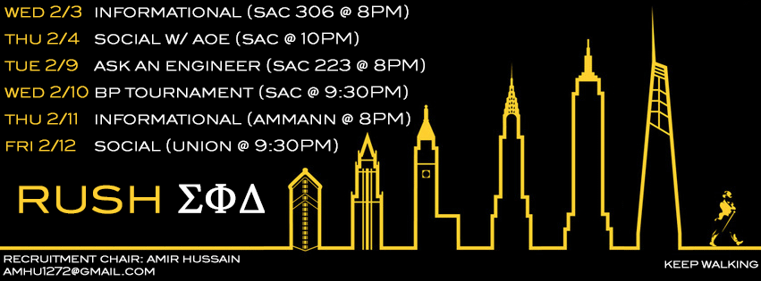

Why rush Sigma Phi Delta?

As the Premier International Fraternity of Engineers, Sigma Phi Delta and its members boast a strong embrace in the
"work hard, play hard" mentality. With that said, the Beta-Eta Chapter at Stony Brook University proves itself to be
both a social and professional organization. Rush is an excellent opportunity in which anyone interested in
learning more, or joining our Organization can come out and do so in a manner that gives proper insight on what we do
, and what we stand for.
No one can truly understand the full perils and workload of a major except those within the major. The members of
Sigma Phi Delta are all within CEAS (College of Engineering and Applied Sciences), covering a solid breathe of its
encompassing majors. Members benefit from working along side one another garnering homework help, study aid, advice
on future courses, and other invaluable assistance. With many members having taken the same classes, Sigma Phi Delta
has comprised a bountiful database of study materials and resources on nearly every major required class and some
for DEC or SBC requirements. We also have strong relations with many faculty and staff around campus primarily within
CEAS. Our relations offer us many opportunities to learn and even engage in research.
Possibly some of the greatest advantages of membership in Sigma Phi Delta are the career development opportunities.
As a member of PGC (Professional Greek Council) we have access to unique opportunities to help build up a strong
professional side in any student especially through events we've previously hosted such as 'Ask an Engineer',
STEM panels, resume reviews, and mock interviews with alumni. Many of our members have received internships while
still in school for companies such as J.P. Morgan, Citi, IBM, Cognizant, UTC, DealerTrack, and Goldman Sachs. Graduating
members have went on to work full-time positions for companies such as Deutsche Bank, Intel, Cummins, Johnson & Johnson, Motorolla Solutions, IBM,
and many more.
While we highly hold the beliefs of strong academics and profession success we also fully understand the importance
of experiencing the social opportunities university has to offer, as we are only here for so long. Sigma Phi Delta
engages in a broad spectrum of social activities such as intramural sports, collaborated events, tailgates, and participation
in various campus events at campus life time. We also maintain strong relations with other Fraternities,
Sororities, and various organizations on campus encouraging a stronger sense of community and good spirit.
The most important aspect of Sigma Phi Delta; however, is its close-knit, diverse brotherhood. The men of Sigma Phi
Delta come from all corners of the country, as well as different areas of the world. Being a member of Sigma Phi
Delta not only gives you people to study and hang out with, but gives you friendships that last a lifetime
Being a member of Sigma Phi Delta not only alters a man's college experience, but also positively affects the rest of their life.
{kind=link}